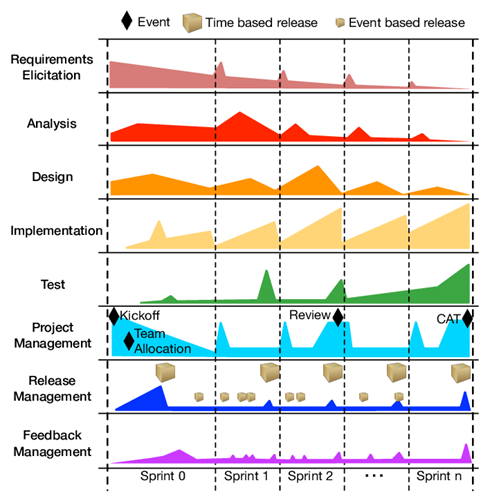

Download DOC, SLIDE, PPTX
Source code management (SCM) is used to track modifications to a source code repository. SCM tracks a running history of changes to a code base and helps resolve conflicts when merging updates from multiple contributors. SCM is also synonymous with Version control. As software projects grow in lines of code and contributor head count, the costs of communication overhead and management complexity also grow. SCM is a critical tool to alleviate the organizational strain of growing development costs.
Authenticated access for commits
Revision history on files
Atomic commits of multiple files
Versioning/Tagging
We can save the file with a different name if it’s our school project or one-time papers but for a well-equipped software development? Not a chance.
Big projects need a version control system to track the changes and avoid misunderstanding. A good SCM does the following:
Backup and Restore – Files can be saved at any moment and can be restored from the last saved.
Synchronization – Programmers can get the latest code and fetch the up-to-date codes from the repository.
Short-Term Undo – Working with a file and messed it up. We can do a short-term undo to the last known version.
Long-Term Undo – It helps when we have to make a release version rollback. Something like going to the last version which was created a year
Track Changes– We can track the changes as when anyone is making any change, he can leave a commit message as for why the change was done.
Ownership– With every commit made to the master branch, it will ask the owner permission to merge it.
Branching and Merging – You can create a branch of your source code and create the changes. Once the changes are approved, you can merge it with the master branch.
The main concept of Centralized Version Control is that it works in a client and server relationship. The repository is located in one place and allows access to multiple clients.
It’s very similar to FTP where you have FTP clients which connect to FTP server. Here all the user changes and commits have to pass through the central server. For Ex: Subversion.
The benefits of centralized version control are:
It’s easy to understand.
There are more GUI and IDE clients.
You have more control over the users and access.
We do have drawbacks also:
It is dependent on the access to the server.
It can be slower because every command from the client has to pass the server.
Branching and merging strategies are difficult to use.
These systems are newer to use. In Distributed Version Control, each user has their own copy of the entire repository as well as the files and history. For Ex: Git and Mercurial
The benefits of distributed version control are:
More powerful and easy change tracking.
No need of a centralized server. Most of the functionalities work in offline mode also apart from sharing the repositories.
Branching and Merging strategies are more easy and reliable.
It’s faster than the other one.
Github
GitLab
BitBucket
SourceForge
Beanstalk
Apache Allura
AWS CodeCommit
Launchpad
Phabricator
GitBucket
Create a “repository” (project) with a git hosting tool (like Bitbucket)
Copy (or clone) the repository to your local machine
Add a file to your local repo and “commit” (save) the changes
“Push” your changes to your master branch
Make a change to your file with a git hosting tool and commit
“Pull” the changes to your local machine
Create a “branch” (version), make a change, commit the change
Open a “pull request”.
“Merge” your branch to the master branch
Initialize
Add
Commit
Pull
Push
Branching
Merging
Rebasing
For more detailed cheetsheat please check the following interactive map
NDP Software :: Git Cheatsheet
Check Installation Already Completed
git --version
If your console gives error about git command follow the steps in the link
Install Git | Atlassian Git Tutorial
In this link you will should download following setup according to your operating system
Download git for OSX
Download git for Windows
Download git for Linux
Download and install GIT from the following links (both have same github release path)
Git - Downloads
After running setup follow the steps below
You can install Git GUI from https://git-scm.com/downloads/guis I prefer to use git extension https://gitextensions.github.io/ and https://tortoisegit.org/
Also Download KDiff3 KDiff3 - Browse Files at SourceForge.net
These extensions provide GUI for git operations to make process easier.
If you install git everything should be green and this configuration is stored on .gitconfig on your home C:/Windows/Users/<user>/.gitconfig
C:/Windows/Users/<user>/.gitconfig
[core] editor = \"C:/Program Files (x86)/GitExtensions/GitExtensions.exe\" fileeditor autocrlf = true quotePath = false commitGraph = true longpaths = true [user] email = xxxxxxx@gmail.com name = xxxx xxxxxx [filter "lfs"] clean = git-lfs clean -- %f smudge = git-lfs smudge -- %f process = git-lfs filter-process required = true [pull] rebase = false [fetch] prune = false [rebase] autoStash = false [credential] helper = manager [diff] guitool = kdiff3 [difftool "kdiff3"] path = C:/Program Files/KDiff3/kdiff3.exe cmd = \"C:/Program Files/KDiff3/kdiff3.exe\" \"$LOCAL\" \"$REMOTE\" [merge] guitool = tortoisemerge [mergetool "tortoisemerge"] path = C:/Program Files/TortoiseGit/bin/TortoiseGitMerge.exe cmd = \"C:/Program Files/TortoiseGit/bin/TortoiseGitMerge.exe\" -base:\"$BASE\" -mine:\"$LOCAL\" -theirs:\"$REMOTE\" -merged:\"$MERGED\" [receive] advertisePushOptions = true [gc] writeCommitGraph = true
Also in extension you can see similar settings
Samples
MergeTool
tortoisemerge
Path to mergetool
C:/Program Files/TortoiseGit/bin/TortoiseGitMerge.exe
Mergetool command
"C:/Program Files/TortoiseGit/bin/TortoiseGitMerge.exe" -base:"$BASE" -mine:"$LOCAL" -theirs:"$REMOTE" -merged:"$MERGED"
Difftool
kdiff3
Path to difftool
C:/Program Files/KDiff3/kdiff3.exe
Difftool command
"C:/Program Files/KDiff3/kdiff3.exe" "$LOCAL" "$REMOTE"
If you see something as merge and diff tool is not configured, follow the similar settings above on your computer. If you installed kdiff3, tortoisegit and extension you will have same diff and merge tools
This topic also help you
Git: How can I configure KDiff3 as a merge tool and diff tool? - Stack Overflow
Open Git->Config, in your settings you will see path to mergetool and difftool will be empty fill settings like that below find executables in your computer and copy paths to here.
Also if we want to change and use different diff and merge tool then we can do this with gitbash console as below
C:\Program Files\TortoiseGit\bin
Find TortoiseGitIDiff.exe and TortoiseGitMerge.exe
Copy path of this applications
C:\Program Files\TortoiseGit\bin\TortoiseGitMerge.exe C:\Program Files\TortoiseGit\bin\TortoiseGitIDiff.exe
open a gitbash console and run following commands
git config --global merge.tool TortoiseGitMerge git config --global mergetool.TortoiseGitMerge.path "C:/Program Files/TortoiseGit/bin/TortoiseGitMerge.exe" git config --global mergetool.TortoiseGitMerge.trustExitCode false git config --global diff.guitool TortoiseGitIDiff git config --global difftool.TortoiseGitIDiff.path "C:/Program Files/TortoiseGit/bin/TortoiseGitIDiff.exe" git config --global difftool.TortoiseGitIDiff.trustExitCode false
This updates will be stored on .gitconfig
right click in the git folder and use Git Extension menu for operations.
for sample commit click "Commit"
from opening window first stage related files and then write a good commit message
finally click commit to local. You can also commit&push it to remote repository.
Requirements
Python >= 3.6
Internet connection
https://github.com/sloria/gig
pip install -U gig
gig --version
List all gitignore templates
gig list gig list -global
Sample gitignore for C Java and Visual Studio
gig C Java VisualStudio > .gitignore
There is a portal for this also by Toptal
•gitignore.io - Create Useful .gitignore Files For Your Project
for samples you can check the following links.
https://github.com/github/gitignore
https://dev.to/shihanng/gig-a-gitignore-generator-opc
It is important to configure your Git because any commits that you make are associated with your configuration details.
configuring Git with your username and email. In order to do that, type the following commands in your Git Bash:
git config - - global user.name "<your name>" git config - - global user.email "<your email>"
git configuration files are located on the user folder
If you want to view all your configuration details, use the command below
git config --list
with gitignore file
without gitignore file (just move to another location)
In order to do that, we use the command git init.
git init creates an empty Git repository or re-initializes an existing one. It basically creates a .git directory with sub directories and template files. Running a git init in an existing repository will not overwrite things that are already there. It rather picks up the newly added templates.
git init
If you enter following command in the git folder you will see nothing
git remote -v
That mean this repository do not have a remote upstream repository such as a github or bitbucket repo.
Open the github and bitbucket repository and copy project path from
you will see the following sample from github code button
https://github.com/ucoruh/ce103-sample-text.git
copy link and use with following command
git remote add origin https://github.com/ucoruh/ce103-sample-text.git
then you can check your remote setting with
$ git remote -v origin https://github.com/ucoruh/ce103-sample-text.git (fetch) origin https://github.com/ucoruh/ce103-sample-text.git (push)
you can check the following sample
How to Add a New Remote to your Git Repo | Assembla Help Center
create a working copy of a local repository by running the command
git clone /path/to/repository
Sample clone command
git clone https://github.com/ucoruh/ce103-sample-text.git
when using a remote server, your command will be
git clone username@host:/path/to/repository
The git status command lists all the modified files which are ready to be added to the local repository.
git status
This command updates the index using the current content found in the working tree and then prepares the content in the staging area for the next commit.
git add <directory> git add <file> git add *
Created two more files edureka3.txt and edureka4.txt. Let us add the files using the command git add -A. This command will add all the files to the index which are in the directory but not updated in the index yet.
•It refers to recording snapshots of the repository at a given time. Committed snapshots will never change unless done explicitly.
Let me explain how commit works with the diagram below
Here, C1 is the initial commit, i.e. the snapshot of the first change from which another snapshot is created with changes named C2. Note that the master points to the latest commit. Now, when I commit again, another snapshot C3 is created and now the master points to C3 instead of C2.
Commands:
git commit -m "<message>"
Now, if you want to commit a snapshot of all the changes in the working directory at once, you can use the command below
Please check writing good commit messages article below
How to write a good commit message - DEV Community
type: subject body (optional) footer (optional)
This contains a short description of the changes made. It shouldn't be greater than 50 characters, should begin with a capital letter and written in the imperative eg. Add instead of Added or Adds.
The body is used to explain what changes you made and why you made them. Not all commits are complex enough that they need a body, especially if you are working on a personal project alone, and as such writing a body is optional.
A blank line between the body and the subject is required and each line should have no more than 72 characters.
The footer is also optional and mainly used when you are using an issue tracker to reference the issue ID.
feat: Summarize changes in around 50 characters or less More detailed explanatory text, if necessary. Wrap it to about 72 characters or so. In some contexts, the first line is treated as the subject of the commit and the rest of the text as the body. The blank line separating the summary from the body is critical (unless you omit the body entirely); various tools like `log`, `shortlog` and `rebase` can get confused if you run the two together. Explain the problem that this commit is solving. Focus on why you are making this change as opposed to how (the code explains that). Are there side effects or other unintuitive consequences of this change? Here's the place to explain them. Further paragraphs come after blank lines. - Bullet points are okay, too - Typically a hyphen or asterisk is used for the bullet, preceded by a single space, with blank lines in between, but conventions vary here If you use an issue tracker, put references to them at the bottom, like this: Resolves: #123 See also: #456, #789
git commit -a
I have created two more text files in my working directory viz. edureka5.txt and edureka6.txt but they are not added to the index yet.
I am adding edureka5.txt using the command
git add edureka5.txt
I have added edureka5.txt to the index explicitly but not edureka6.txt and made changes in the previous files. I want to commit all changes in the directory at once.
This command will commit a snapshot of all changes in the working directory but only includes modifications to tracked files i.e. the files that have been added with git add at some point in their history. Hence, edureka6.txt was not committed because it was not added to the index yet. But changes in all previous files present in the repository were committed, i.e. edureka1.txt, edureka2.txt, edureka3.txt, edureka4.txt and edureka5.txt. Now I have made my desired commits in my local repository
your local repository consists of three "trees" maintained by git. the first one is your Working Directory which holds the actual files. the second one is the Index which acts as a staging area and finally the HEAD which points to the last commit you've made
If we have a remote Git branch, for example a branch on Github, it can happen that the remote branch has commits that the current branch doesn't have! Maybe another branch got merged, your colleague pushed a quick fix, and so on.
We can get these changes locally, by performing a git fetch on the remote branch! It doesn't affect your local branch in any way: a fetch simply downloads new data.
git fetch
fetch
We can now see all the changes that have been made since we last pushed! We can decide what we want to do with the new data now that we have it locally.
Although a git fetch is very useful in order to get the remote information of a branch, we can also perform a git pull. A git pull is actually two commands in one: a git fetch, and a git merge. When we're pulling changes from the origin, we're first fetching all the data like we did with a git fetch, after which the latest changes are automatically merged into the local branch
git pull
git merge
Awesome, we're now perfectly in sync with the remote branch and have all the latest changes!
Note that before you affect changes to the central repository you should always pull changes from the central repository to your local repository to get updated with the work of all the collaborators that have been contributing in the central repository. For that we will use the pull command.
But first, you need to set your central repository as origin using the command
git remote add origin <link of your central repository>
Now that my origin is set
let us extract files from the origin using pull. For that use the command
git pull origin master
This command will copy all the files from the master branch of remote repository to your local repository.
Since my local repository was already updated with files from master branch, hence the message is Already up-to-date. Refer to the screen shot above
One can also try pulling files from a different branch using the following command:
git pull origin <branch-name>
Your local Git repository is now updated with all the recent changes. It is time you make changes in the central repository by using the push command.
you can then push them to the central repository by using the following command
git push <remote>
This remote refers to the remote repository which had been set before using the pull command.
The below files are the files which we have already committed previously in the commit section and they are all “push-ready“.
I will use the command git push origin master to reflect these files in the master branch of my central repository.
git push origin master
To prevent overwriting, Git does not allow push when it results in a non-fast forward merge in the destination repository.
A non-fast forward merge means an upstream merge i.e. merging with ancestor or parent branches from a child branch To enable such merge, use the command below git push <remote> -force
A non-fast forward merge means an upstream merge i.e. merging with ancestor or parent branches from a child branch To enable such merge, use the command below
git push <remote> -force
The above command forces the push operation even if it results in a non-fast forward merge
Branches in Git are nothing but pointers to a specific commit. Git generally prefers to keep its branches as lightweight as possible.
There are basically two types of branches viz.
local branches
remote tracking branches.
A local branch is just another path of your working tree. On the other hand, remote tracking branches have special purposes. Some of them are:
They link your work from the local repository to the work on central repository.
They automatically detect which remote branches to get changes from, when you use git pull.
You can check what your current branch is by using the command
git branch
The one mantra that you should always be chanting while branching is “branch early, and branch often”
git branch -l
git branch -r
git branch -a
Removing merged git branches
(after pull-request action in github)
If you merged your branch to base branch in github and delete it on github your local branch list will not be updated by it self. You have to use the following command to update local and remote branch lists. Use the following command to syncronize your repository with remote upstream repo.
git remote update --prune
To create a new branch we use the following command
git branch <branch-name>
The diagram below shows the workflow when a new branch is created. When we create a new branch it originates from the master branch itself.
Since there is no storage/memory overhead with making many branches, it is easier to logically divide up your work rather than have big chunky branches
You can create and change branch with following command, create a new branch named "feature_x" and switch to it using
git checkout -b feature_x
git checkout <branch-name> git checkout master
Branching includes the work of a particular commit along with all parent commits. As you can see in the diagram above, the newBranch has detached itself from the master and hence will create a different path
and delete the branch again, before doing this switch to main or master branches.
git branch -d feature_x
git push origin --delete feature_x
How to delete remote branches in Git
A branch is not available to others unless you push the branch to your remote repository
git push origin <branch>
to update your local repository to the newest commit, execute
in your working directory to fetch and merge remote changes.
to merge another branch into your active branch (e.g. master), use
git merge <branch>
in both cases git tries to auto-merge changes. Unfortunately, this is not always possible and results in conflicts. You are responsible to merge those conflicts manually by editing the files shown by git. After changing, you need to mark them as merged with
git add <filename>
before merging changes, you can also preview them by using
git diff <source_branch> <target_branch>
Git merge conflicts | Atlassian Git Tutorial
There are two types of merges Git can perform: a fast-forward, or a no-fast-forward
--ff
A fast-forward merge can happen when the current branch has no extra commits compared to the branch we’re merging. Git is... lazy and will first try to perform the easiest option: the fast-forward! This type of merge doesn’t create a new commit, but rather merges the commit(s) on the branch we’re merging right in the current branch
Perfect! We now have all the changes that were made on the dev branch available on the master branch. So, what's the no-fast-forward all about?
dev
master
--no-ff
It's great if your current branch doesn't have any extra commits compared to the branch that you want to merge, but unfortunately that's rarely the case! If we committed changes on the current branch that the branch we want to merge doesn't have, git will perform a no-fast-forward merge.
With a no-fast-forward merge, Git creates a new merging commit on the active branch. The commit's parent commits point to both the active branch and the branch that we want to merge!
No big deal, a perfect merge! The master branch now contains all the changes that we've made on the dev branch.
Although Git is good at deciding how to merge branches and add changes to files, it cannot always make this decision all by itself This can happen when the two branches we're trying to merge have changes on the same line in the same file, or if one branch deleted a file that another branch modified, and so on.
In that case, Git will ask you to help decide which of the two options we want to keep! Let's say that on both branches, we edited the first line in the README.md.
README.md
If we want to merge dev into master, this will end up in a merge conflict: would you like the title to be Hello! or Hey!?
Hello!
Hey!
When trying to merge the branches, Git will show you where the conflict happens. We can manually remove the changes we don't want to keep, save the changes, add the changed file again, and commit the changes
Although merge conflicts are often quite annoying, it makes total sense: Git shouldn't just assume which change we want to keep
participants.txt
(I added a hyphen before each name)
Finance team Charles Lisa John Stacy Alexander
git init git add . git commit –m 'Initial list for finance team'
Create a new branch called marketing using the following syntax
git checkout –b marketing
Now open the participants.txt file and start entering the names for the marketing department below the finance team list, as follows: (I added a hyphen before each name)
Marketing team Collins Linda Patricia Morgan
git add . git commit –m 'Unfinished list of marketing team' git checkout master
Open the file and delete the names Alexander and Stacy, save, close, add the changes, and commit with the commit message Final list from Finance team
git add . git commit –m "Final list from Finance team" git checkout marketing
Open the file and add the fifth name, Amanda, for the marketing team, save, add, and commit
git add . git commit –m "Initial list of marketing team"
names entered for marketing have been confirmed; now we need to merge these two lists, which can be done by the following command
git merge master
Auto-merging participants.txt CONFLICT (content): Merge conflict in participants.txt Automatic merge failed; fix conflicts and then commit the result.
Finance team -Charles -Lisa -John <<<<<<< HEAD -Stacy -Alexander Marketing team - Collins - Linda - Patricia - Morgan - Amanda ======= >>>>>>> master
<<<<<<< Changes made on the branch that is being merged into. In most cases, this is the branch that I have currently checked out (i.e. HEAD). ||||||| The common ancestor version. ======= Changes made on the branch that is being merged in. This is often a feature/topic branch. >>>>>>>
If we want to save all to our version
git checkout --ours . # checkout our local version of all files git add -u # mark all conflicted files as merged git commit # commit the merge
If we want to discard all our revision
git checkout --theirs . # checkout remote version of all files git add -u # mark all conflicted files as merged git commit # commit the merge
You're going to pull some changes, but oops, you're not up to date:
git fetch origin git pull origin master From ssh://gitosis@example.com:22/projectname * branch master -> FETCH_HEAD Updating a030c3a..ee25213 error: Entry 'filename.c' not uptodate. Cannot merge.
So you get up-to-date and try again, but have a conflict:
git add filename.c git commit -m "made some wild and crazy changes" git pull origin master From ssh://gitosis@example.com:22/projectname * branch master -> FETCH_HEAD Auto-merging filename.c CONFLICT (content): Merge conflict in filename.c Automatic merge failed; fix conflicts and then commit the result.
So you decide to take a look at the changes:
git mergetool
Oh my, oh my, upstream changed some things, but just to use my changes...no...their changes...
git checkout --ours filename.c git checkout --theirs filename.c git add filename.c git commit -m "using theirs"
And then we try a final time
git pull origin master From ssh://gitosis@example.com:22/projectname * branch master -> FETCH_HEAD Already up-to-date.
it's recommended to create tags for software releases. this is a known concept, which also exists in SVN. You can create a new tag named 1.0.0 by executing
git tag 1.0.0 1b2e1d63ff
the 1b2e1d63ff stands for the first 10 characters of the commit id you want to reference with your tag. You can get the commit id by looking at the...
in its simplest form, you can study repository history using.. git log
You can add a lot of parameters to make the log look like what you want. To see only the commits of a certain author:
git log --author=bob
To see a very compressed log where each commit is one line:
git log --pretty=oneline
Or maybe you want to see an ASCII art tree of all the branches, decorated with the names of tags and branches:
git log --graph --oneline --decorate --all
See only which files have changed:
git log --name-status
These are just a few of the possible parameters you can use. For more, see
git log --help
In case you did something wrong, which for sure never happens ;), you can replace local changes using the command
git checkout -- <filename>
this replaces the changes in your working tree with the last content in HEAD. Changes already added to the index, as well as new files, will be kept.
if you use dot (.) then all local changes will be rollbacked.
git checkout -- .
If you instead want to drop all your local changes and commits, fetch the latest history from the server and point your local master branch at it like this
git fetch origin git reset --hard origin/master
Everyone makes mistakes, and that's totally okay! Sometimes it may feel like you've corrupt your git repo so badly that you just want to delete it entirely.
git reflog is a very useful command in order to show a log of all the actions that have been taken! This includes merges, resets, reverts: basically any alteration to your branch.
git reflog
If you made a mistake, you can easily redo this by resetting HEAD based on the information that reflog gives us!
HEAD
reflog
Say that we actually didn't want to merge the origin branch. When we execute the git reflog command, we see that the state of the repo before the merge is at HEAD@{1}. Let's perform a git reset to point HEAD back to where it was on HEAD@{1}!
HEAD@{1}
git reset
We can see that the latest action has been pushed to the reflog
It can happen that we committed changes that we didn't want later on. Maybe it's a WIP commit, or maybe a commit that introduced bugs! In that case, we can perform a git reset.
WIP
A git reset gets rid of all the current staged files and gives us control over where HEAD should point to.
A soft reset moves HEAD to the specified commit (or the index of the commit compared to HEAD), without getting rid of the changes that were introduced on the commits afterward!
Let's say that we don't want to keep the commit 9e78i which added a style.css file, and we also don't want to keep the commit 035cc which added an index.js file. However, we do want to keep the newly added style.css and index.js file! A perfect use case for a soft reset.
9e78i
style.css
035cc
index.js
When typing git status, you'll see that we still have access to all the changes that were made on the previous commits. This is great, as this means that we can fix the contents of these files and commit them again later on!
Sometimes, we don't want to keep the changes that were introduced by certain commits. Unlike a soft reset, we shouldn't need to have access to them any more. Git should simply reset its state back to where it was on the specified commit: this even includes the changes in your working directory and staged files!
Git has discarded the changes that were introduced on 9e78i and 035cc, and reset its state to where it was on commit ec5be.
ec5be
Another way of undoing changes is by performing a git revert. By reverting a certain commit, we create a new commit that contains the reverted changes!
git revert
Let's say that ec5be added an index.js file. Later on, we actually realize we didn't want this change introduced by this commit anymore! Let's revert the ec5be commit.
Perfect! Commit 9e78i reverted the changes that were introduced by the ec5be commit.
Performing a git revert is very useful in order to undo a certain commit, without modifying the history of the branch.
When a certain branch contains a commit that introduced changes we need on our active branch, we can cherry-pick that command! By cherry-picking a commit, we create a new commit on our active branch that contains the changes that were introduced by the cherry-picked commit.
cherry-pick
Say that commit 76d12 on the dev branch added a change to the index.js file that we want in our master branch. We don't want the entire we just care about this one single commit!
76d12
Cool, the master branch now contains the changes that 76d12 introduced
We just saw how we could apply changes from one branch to another by performing a git merge. Another way of adding changes from one branch to another is by performing a git rebase.
git rebase
A git rebase copies the commits from the current branch, and puts these copied commits on top of the specified branch.
Perfect, we now have all the changes that were made on the master branch available on the dev branch!
A big difference compared to merging, is that Git won't try to find out which files to keep and not keep. The branch that we're rebasing always has the latest changes that we want to keep! You won't run into any merging conflicts this way, and keeps a nice linear Git history.
This example shows rebasing on the master branch. In bigger projects, however, you usually don't want to do that. A git rebase changes the history of the project as new hashes are created for the copied commits!
Rebasing is great whenever you're working on a feature branch, and the master branch has been updated. You can get all the updates on your branch, which would prevent future merging conflicts!
Before rebasing the commits, we can modify them! We can do so with an interactive rebase. An interactive rebase can also be useful on the branch you're currently working on, and want to modify some commits.
There are 6 actions we can perform on the commits we're rebasing:
reword
edit
squash
fixup
exec
drop
Awesome! This way, we can have full control over our commits. If we want to remove a commit, we can just drop it.
Or if we want to squash multiple commits together to get a cleaner history, no problem!
Interactive rebasing gives you a lot of control over the commits you're trying to rebase, even on the current active branch
built-in git GUI
gitk
use colorful git output
git config color.ui true
show log on just one line per commit
git config format.pretty oneline
use interactive adding
git add -i
HEAD~2 // previous two commits fro head HEAD~~ // previous two commits from head HEAD@{2} // reflog order 18fe5 // previous commit hash
A successful Git branching model » nvie.com
OneFlow – a Git branching model and workflow | End of Line Blog
a simple git branching model · GitHub
http://justinhileman.info/article/git-pretty/git-pretty.png

https://gource.io/
Source Code Management | Atlassian Git Tutorial.
What is Source Code Management or Version Control ? - The Linux Juggernaut
https://www.edureka.co/blog/how-to-use-github/
https://www.edureka.co/blog/git-tutorial/
https://www.edureka.co/blog/install-git/
git - the simple guide - no deep shit!
GitHub - rogerdudler/git-guide: git - the simple guide
https://dev.to/lydiahallie/cs-visualized-useful-git-commands-37p1#merge
https://blog.xebialabs.com/2016/06/14/periodic-table-devops-tools-v-2/
https://harness.io/2018/01/devops-tools-lifecycle-mesh-2018/
https://medium.com/swlh/how-to-become-an-devops-engineer-in-2020-80b8740d5a52
https://www.lucidchart.com/blog/devops-process-flow
https://www.researchgate.net/publication/262450962_Rugby_An_Agile_Process_Model_Based_on_Continuous_Delivery
Git Tutorial | Commands And Operations In Git | Edureka
An Introduction to Git and GitHub by Brian Yu - YouTube
https://education.github.com/git-cheat-sheet-education.pdf
NDP Software :: Git Cheatsheet;
Learn Git Branching
https://guides.github.com/introduction/git-handbook/